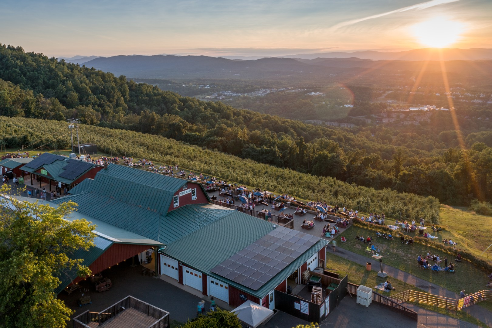
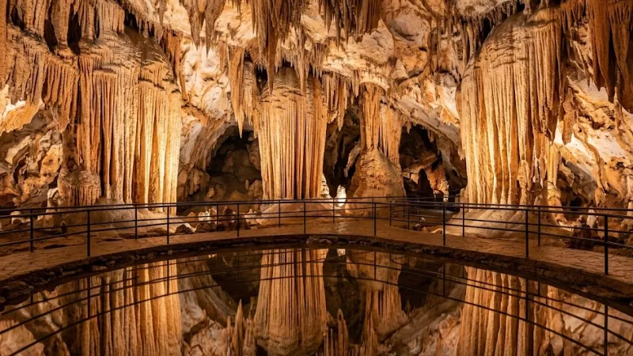
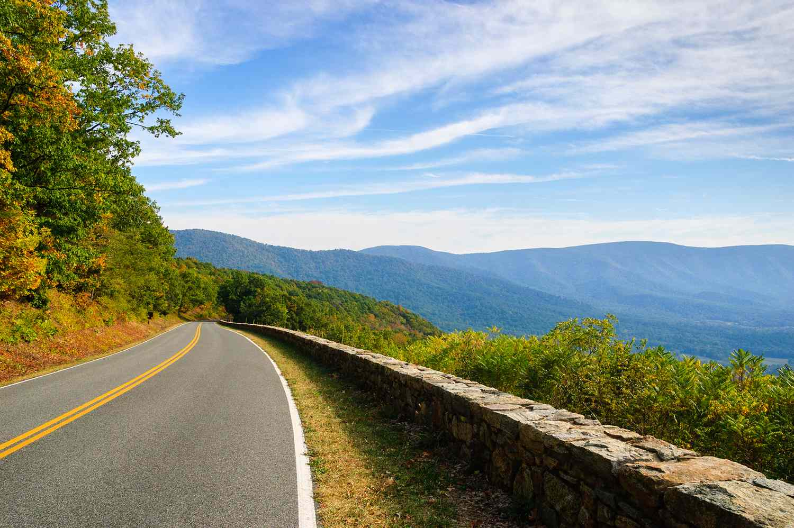
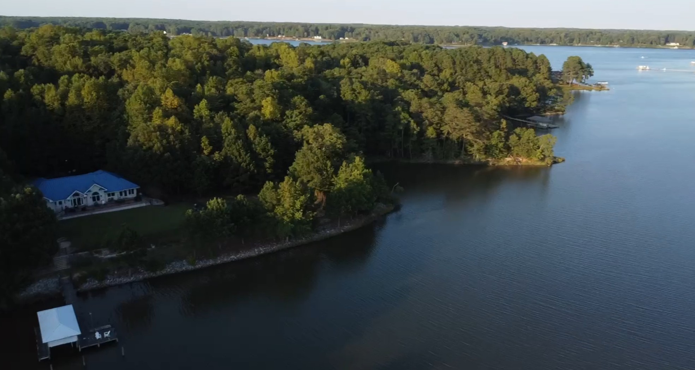
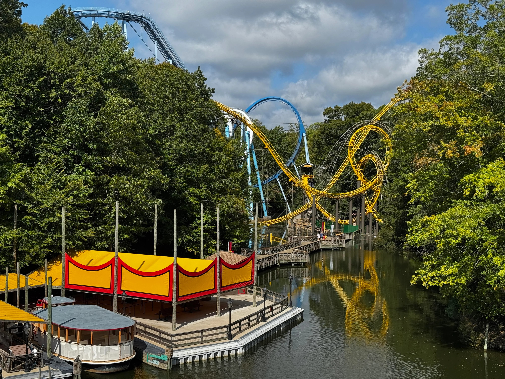
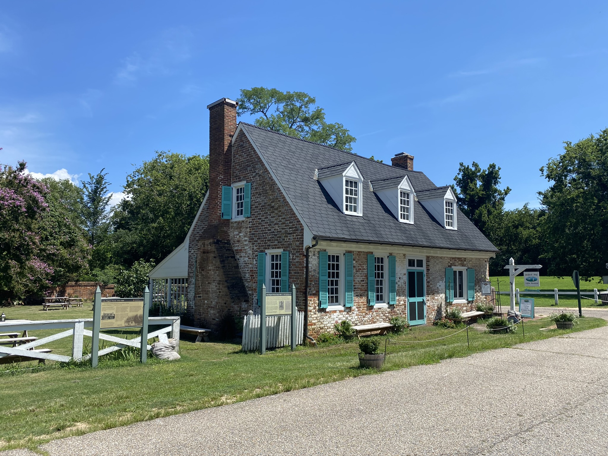
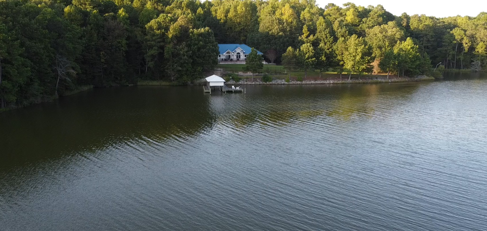

Thursday · Sept 10
Austin to Charlottesville
Flights American · conf. DUXCCY
AA1067Austin → Dallas · depart AUS 8:00 AM, arrive DFW 9:21 AM
Connection1 hr 2 min at DFW
Dallas → Richmonddepart DFW 10:23 AM, arrive RIC 2:23 PM
Charlottesville arrival
- ~3:00 PM — collect luggage and rental car
- Drive ~1 hr 15 min to Charlottesville
- ~4:30 PM — check in at 100 Oakhurst Circle, freshen up, meet family at Carter Mountain
Lodging — 100 Oakhurst Circle, Charlottesville VA
Carter Mountain Sunset Series 6:00–9:00 PM
- The Mellow Dramatics playing classic rock
- Vision BBQ and Farmacy food trucks
- Bold Rock cider, wine, mountain views — dinner at the event
Needs advance tickets. If the flight is substantially delayed, backup is dinner with family in Charlottesville.

Friday · Sept 11
Luray, Skyline Drive & Downtown Mall
Bodo's Bagels breakfast 7:00 AM
- UVA Corner location, 1609 University Avenue
- Leave Charlottesville ~7:45–8:00 AM
Luray Caverns ~9:15–9:30 AM
- Tour the caverns — allow ~2 hours, longer for the included museums
- Lunch around Luray
Open until 6:00 PM after Labor Day.
Skyline Drive

- Enter Shenandoah at Thornton Gap (mile 31.5)
- Drive south to Swift Run Gap (mile 65.5) — ~34-mile section, stop at overlooks
- Exit at Swift Run Gap, return to Charlottesville ~4:30–5:00 PM
Vehicle entrance fee $30, covers everyone for 7 days.
Downtown Charlottesville with family
- ~5:30 PM — New Dominion Bookshop (404 E Main, open til 9 PM Fri)
- ~6:15 PM — dinner on the Downtown Mall
- ~7:30–9:30 PM — Decades Arcade (418 E Main, open til 10 PM)
Bookshop and arcade are nearly next door. Two-hour unlimited arcade pass: ~$12.

Saturday · Sept 12
Charlottesville to the Riverhouse
Morning with family 8:00 AM
- Bodo's Bagels with the family
- Pack and check out, leave ~9:00–9:30 AM
Richmond lunch stop dropped from the primary plan to leave enough time for the boat and riverhouse.
Arrive at the riverhouse ~11:30 AM–noon
- Drive directly to the riverhouse on Eventide Lane
- Unpack, settle in, prepare the boat
Riverhouse — 11078 Eventide Ln, Gloucester VA 23061
Boat to Hole in the Wall noon / early afternoon
- Depart the riverhouse, boat down the Piankatank toward Gwynn's Island
- Dock at Hole in the Wall Waterfront Grill for a leisurely waterfront lunch
- Return to the riverhouse in the afternoon
Serving from 11:30 AM Saturday; welcomes guests arriving by boat. Call shortly before the trip to confirm seasonal hours and dock availability. Time the departure around weather, wind, tide, cruising speed, travel time, and plenty of daylight for the return.
Saturday evening
- Relax at the riverhouse — no additional sightseeing
- Casual dinner, drinks, time by the water
Intentionally the least structured day of the trip.

Sunday · Sept 13
Busch Gardens Williamsburg
Morning
- Relaxed breakfast at the riverhouse
- Leave early enough to arrive ~30–45 min before opening
Check park hours again the week before the trip.
Busch Gardens Williamsburg, VA
Busch Gardens — full day
- Ride the coasters and cover anything you want
- Take a midday break rather than rushing continuously
Howl-O-Scream from 6:00 PM
- Season starts September 11
- Scare actors and haunted attractions begin at 6:00 PM
- Haunted houses and scare zones included with admission; coasters run after dark
Stay for nighttime rides and return to the riverhouse after close.

Monday · Sept 14
Jamestown, Yorktown & Yorktown Pub
Relaxed morning
- Breakfast and coffee at the riverhouse
- Leave ~8:30–9:00 AM — not rushed
Jamestown Glasshouse ~9:45–10:00 AM
- Watch the glassblowing demonstration
- See the remains of the original glass furnaces
- Allow ~45–60 min
Open daily 8:45 AM–4:30 PM with demonstrations throughout the day.
Historic Jamestowne dig site
- Visit the settlement and archaeological dig
- Explore the fort site and Archaearium museum
- Allow ~2–3 hours including lunch at the Dale House Café
Dale House Café is closed for renovations, expected to reopen summer 2026 — confirm before the trip. If not open, bring a picnic or use another nearby option.
Yorktown Battlefield ~1:30–2:00 PM
- Follow current Colonial Parkway detours to Yorktown
- Start at the Battlefield Visitor Center
- Complete the main 7-mile Auto Tour; add parts of the 9-mile Allied Encampment Tour if time allows
Tour roads open until sunset; free NPS Yorktown audio-guide app available. Colonial Parkway construction has closures after September 7 — check the detour map before leaving.
Yorktown waterfront & Yorktown Pub
- ~4:30–5:00 PM — walk Yorktown Beach and Riverwalk Landing
- ~5:00–6:00 PM — dinner at Yorktown Pub, then return to the riverhouse
Yorktown Pub open Monday 11:00 AM–11:00 PM, no reservations.

Tuesday · Sept 15
Riverhouse Morning & Return Home
Morning
- Sleep in, relaxed breakfast
- Optional short boat ride if the weather is good
- Pack, clean up, final time by the water, early lunch
- Leave the riverhouse ~1:45–2:00 PM
Do most packing Monday night if you want the boat Tuesday morning.
Return flights arrive RIC ~3:15 PM
Return carat Richmond International
RIC → CLTdepart 5:23 PM, arrive 6:48 PM
Connection32 min at Charlotte
CLT → AUSdepart 7:20 PM, arrive 9:08 PM
The Charlotte connection is extremely tight. Go directly to the Austin gate after landing.
Contingency
Boating-Weather Backup Plan
Saturday is the preferred Hole in the Wall boating day. If wind, rain, or water conditions make boating unsafe, swap the two days:
Saturday (backup)
- Leave Charlottesville after Bodo's
- Visit the Jamestown Glasshouse and dig site while traveling toward Gloucester
- Eat at the Dale House Café if open
- Continue to the riverhouse and relax
Monday (backup)
- Boat to Hole in the Wall for lunch, return to the riverhouse
- Visit Yorktown Battlefield later in the afternoon
- Finish with dinner at Yorktown Pub
Poor Saturday boating conditions don't eliminate either Jamestown or the Hole in the Wall trip.